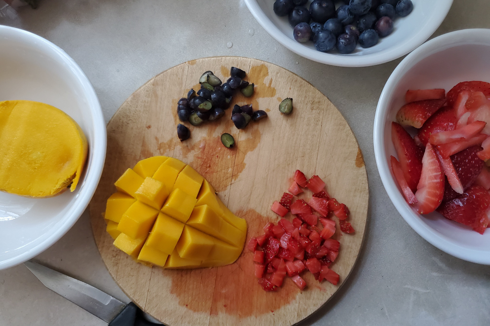
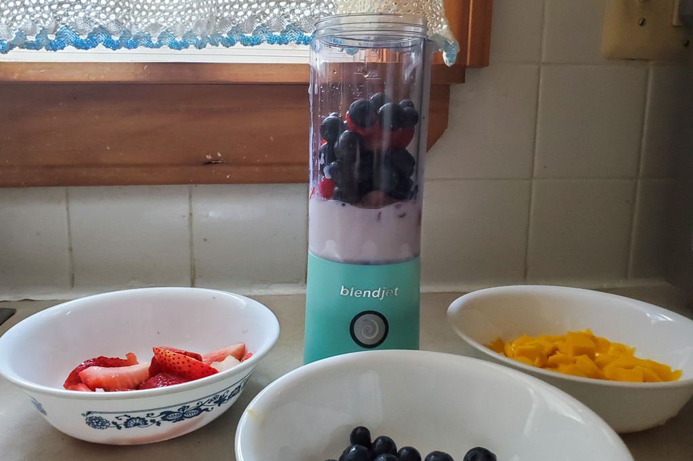
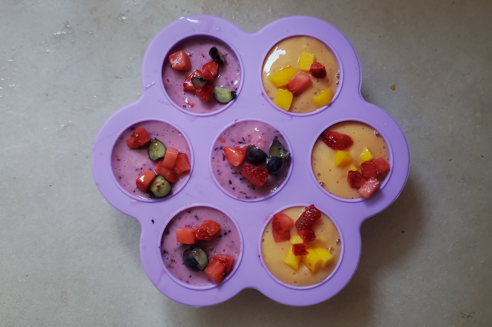
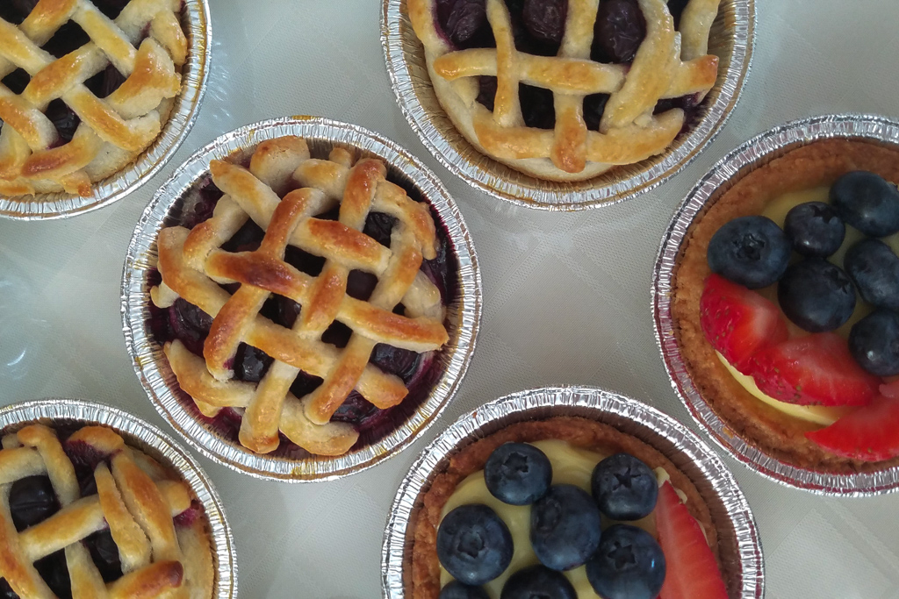

Summer Treats
Jun 20 - Written by Bonnie and Emily
With this hot summer weather that's got us cranking up the AC, we figured it was the perfect time for us to introduce some of our latest and greatest summer treats to beat the heat!
Not to mention that with the summer season comes one of the greatest fruit seasons of the year. Filling up our refrigerator with some of our most favorite fruits like strawberry, blueberries, and mango!
One of our most recent favorites is perfect for cooling off while hanging out with your friends and family outside - Popsicles!! More specifically, fresh fruit popsicles that provide all the nutrients and vitamins in the best form possible. Not to mention this is a perfect summer snack for young children as well as it’s all natural sugars and healthy ingredients!
There are a lot of different recipes for popsicles but one of our favorite go-tos involves some of our favorite fruits. We made two different flavors, strawberry and blueberry, as well as strawberry and mango. You can’t deny these are some of the best fruits to pair together! However, make sure that all the fruits picked out are ripe and sweet in order to avoid adding additional sugars.
To add a little bit more texture to the popsicles, we chopped up small bite sized pieces of fruit to add into the popsicle molds before pouring in our popsicle mixtures. Although the natural fruits do already contain a lot of juice, in order to make sure that the popsicle mixture has enough liquid to blend well in a blender, add a splash of milk beforehand. Not only would it provide a richer flavor but also add a small hint of creaminess to your popsicle! If you’re looking for a creamy fruit popsicle, then add a 1:1 ratio of fruit to milk!
Then the rest is easy! Blend the fruits together and pour them into your popsicle mold. Here I’m using a baby popsicle mold that's adorable and a perfect snack serving size for adults too! Leave the mold in the freezer for a minimum of 4 hours and your fresh fruit popsicles are ready to be devoured.
Another ice related treat that we’ve started making daily is mint ice! As you know, Bonnie has been a full fledged plant mom and her mint plant Juju has been growing at an extreme rate. Juju has been growing so quickly she had to start figuring out what to do with the excess amount of mint that was invading her fridge.
Since fresh mint leaves can go bad relatively quickly, she decided that she would have to do something different with her mint leaves - mint ice! It’s such a simple recipe to make and so versatile to use. Wash the mint leaves thoroughly before placing them into the ice cube tray and then add water.
To make your ice cubes crystal clear to get a clear view of the mint leaf, make sure to use filtered water! These mint ice cubes are perfect to keep your water cool and minty fresh. We’ve also been enjoying using it in our cold brew coffees to add a minty flavor that’s extra refreshing on a summer day!
Another great way to use up fresh berries is in desserts, more specifically, fresh fruit tarts and berry pies. Though we aren’t a huge fan of pies, we couldn’t resist making these adorable mini pies and tarts. If you’re looking for something cool to enjoy, then the fruit tart is your way to go as it has a thin flaky crust filled with sweet vanilla custard and topped with plenty of berries. We suggest going with your favorite selection of fruit as most will work well on a tart but what better way to embrace the summer season than to go with what's in season - berries!
Now if you’re like us and enjoy going berry picking at least once every summer, then you probably have more berries than you can possibly eat in one sitting, so why not make the most of it and turn some of that into a delicious treat! As we had an excess of blueberries in our fridge, we decided to turn them into adorable little blueberry pies, just be aware that since they’re small, it becomes a little more tedious making the tops of the pies. But no matter what topping you choose, each pie is the perfect serving size for one person and what’s even better is topping it off with a nice scoop of cold vanilla ice cream. We say we aren’t pie people but these tiny blueberry pies hit differently and were a tasty way to end a hot summer day.
Whether you’re more of a cold summer treat person or warm, we hope you’ll take advantage of the berry season and make some sweet treats! As two fruit loving humans, we know we’re always looking for new ways to utilize fruit in our desserts and daily lives.